⇢ Le Film du jour. ⇠
✵ Cassandra, bonjour, ou bonsoir, ... ✵
Aujourd'hui tu vas découvrir un super film, parce que c'est moi qui l'ai choisi déjà, et puis parce que la plupart des films de cette liste sont soit des gros classiques incontournables soit des films plus récents mais devant lesquels tu passes un très bon moment.
Explication 🎬
Après avoir pioché dans le bocal, trouvé ton film (j'espère que t'as pas triché hein😤) et scanné le QR Code tu pourras regarder plus attentivement ton papier et trouver un petit numéro indiqué à côté de ton film. Ensuite tu pourras cliquer sur ce m^me numéro ci-dessous et découvrir une petite surprise de ce qui t'attend : 1 résumé, 1 image, 1 réplique.
↣ Passe un bon moment ↢
Trouve ton film
1. Première Année
Film super cool et réaliste (réalisé par un médecin) sur la première année de paces et la galère que s'est.
"Tu connais la différence entre un étudiant en médecine et un étudiant en prépa ? Demande leur d’apprendre le Bottin par cœur. L’étudiant en prépa il te demandera pourquoi et l’étudiant en médecine, pour quand ?"
2. Green Book
Film oscarisé sur l'amitié improbable d'un chauffeur immigré italien et d'un pianiste noir gay dans les années 60. Le film évoque les questions du racisme, de l'homophobie et de la ségrégation, mais en sah t'inquiètes pas c'est drôle et touchant.
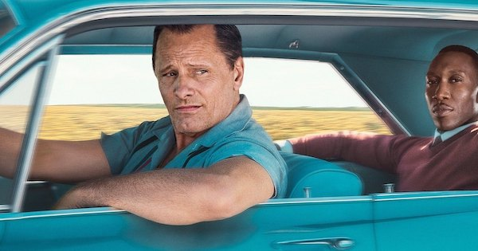"You never win with violence, Tony. You only win when you maintain your dignity."
3. How to lose a guy in 10 days
Petite comédie romantique sympa qui a connu un gros succès à sa sortie en 2005. En plus Matthew McConaughey est sexy dans le film.
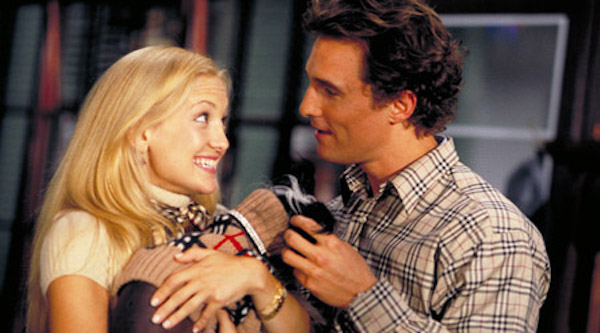"You can't lose something you never had."
4. Le flic de Beverly Hills
Comédie d'action sur Axel Foley, un policier peu discipliné de Detroit, qui enquête sur la mort d'un de ses amis et va se retrouver à Beverly Hills.
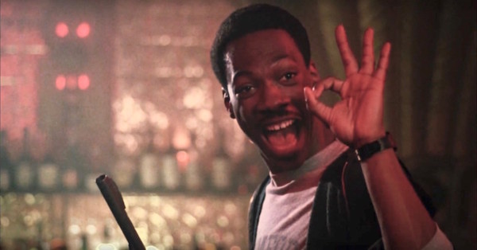"I ain't never been in no cell that had a phone in it. Can I stay for a while? I ordered some pizza."
5. The Impossible
Film inspiré d'une histoire vraie : en 2004 à Noël la Thaïlande est ravagée par un tsunami. Le film suit l'histoire d'une famille qui se retrouve séparée au milieu de la catastrophe. Les acteurs et les effets spéciaux sont incroyables.
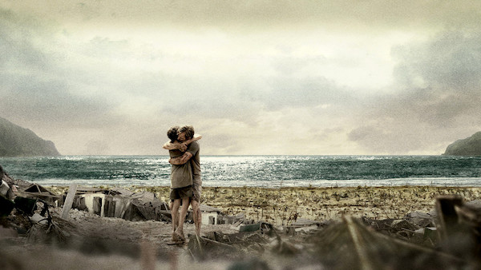"I am going to find them, I promess you"
6. Le fabuleux destin d'Amélie Poulain
C'est l'histoire d'une serveuse qui travaille à Montmartre et se lance dans une espèce de quête du bonheur. C'est nul comme résumé mais j'te jure que le film il est bien en vrai.
"Vous savez, la chance, c'est comme le Tour de France: on l'attend longtemps et ça passe vite. Alors quand le moment vient, il faut sauter la barrière sans hésiter."
7. Kingsman
C'est assez connu donc peut-être que tu l'as vu déjà, et si non : c'est un jeune un peu délinquant qui vit à Londres et du jour au lendemain il se fait recruter pour devenir un Kingsman. Les Kingsman c'est des espions anglais hyper classes, très gentlemen. Le film est super marrant et les scènes d'actions t'es pas prête.
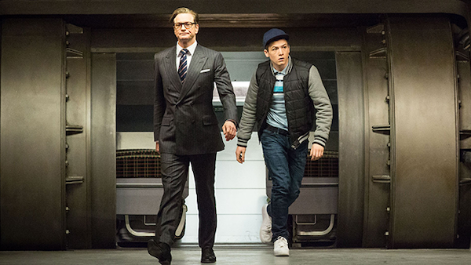"So, are we going to stand around here all day, or are we going to fight?"
8. Chronicle
Alors déjà raison numéro une de regarder ce film : bae. Ensuite c'est filmé avec une petite caméra tenue à la main, donc t'as vraiment l'impression d'être dans le film genre.

"I can fly!"
9. Contagion
On est pas mal dans le mood en ce moment. Le film décrypte le développement hyper rapide d'une épidémie mondiale à toutes les échelles avec la recherche du patient zero, ceux qui disent n'importe quoi sur internet, les gens qui paniquent,... Et en bonus il y a des bêtes d'acteurs !
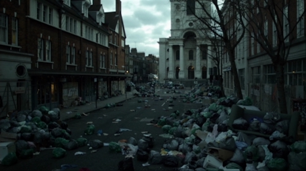"Don't talk to anyone! Don't touch anyone!"
10. Le Fondateur
Bon je te fais pas un résumé tu sais ce que s'est voilà.
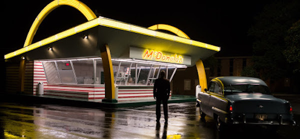"Contracts are like hearts. They're made to be broken."
11. De l'autre côté du périph
Le capitaine de la crim' de Paris se retrouve mêlé dans une affaire policière avec un policier de Bobigny, pour résoudre un meurtre ils vont devoir travailler ensemble... Mdrrrr il tue mon résumé là.
"Regarde ta tête tu pues le flic à 100 mètres."
12. Insaisissables
Ça je crois que tu l'as vu. Mais sinon tu verras c'est un film sur des magiciens hyper badass voilà.
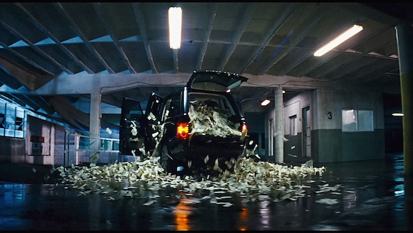"The closer you think you are, the less you'll actually see."
13. Deepwater Horizon
C'est l'histoire vraie de l'explosion d'une plateforme pétrolière américaine dans le golf du Mexique en 2010. Le film est bouleversant, les effets spéciaux incroyables et tous les evènements qui ont précédés et provoqués l'explosion sont super bien réalisés et font vite monter le stress.
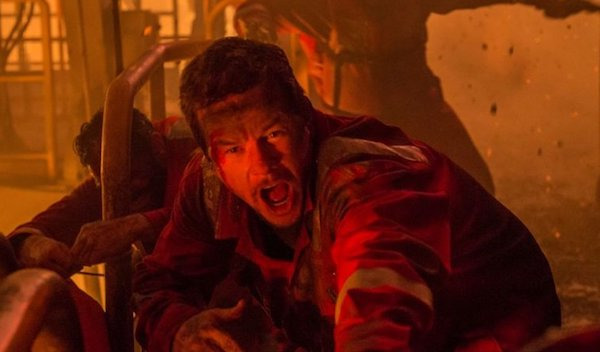" Don, you and I both know we need some downtime for maintenance. Mike, how many of our machines need repair? - Uh... 390, Mr. Jimmy."
14. Demain tout commence
Film triste et mignon, c'est histoire d'un père et de sa fille, Gloria, qui vivent tous les deux à Londres quand du jour au lendemain la mère de Gloria débarque et réclame la garde de sa fille.
" Mon père m'a préparée à affronter mes erreurs. - Et ma fille à affronter la vie."
15. Little Miss Sunshine
J'adore ce film, en gros c'est l'histoire du roadtrip d'une famille de loseurs qui se rend au concours de beauté Little Miss Sunshine en Californie pour la petite fille de la famille : Olive. Bien sûr ils vont rencontrer que des galères.
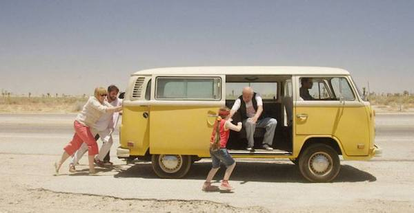" You do what you love and fuck the rest."
16. 42
Histoire vraie sur le premier joueur de baseball noir aux États-Unis. Le film est vraiment bien, les acteurs sont super, par contre le racisme est vraiment mis en avant car c'était pendant la ségrégation et parfoid c'est vraiment révoltant quoi.
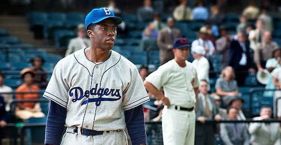" We had a victory of fascism in Germany. It's time, time we had a victory over racism at home."
17. BlacKkKansman
Le film traite d'une histoire vraie dont le sujet est assez sensible mais avec humour : un policier noir débarque dans le sud des US et réussit à infiltrer le Klu Klux Klan.
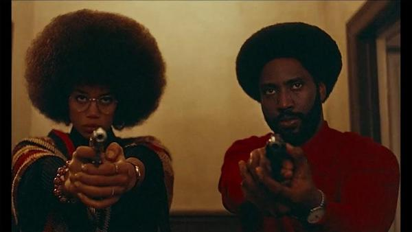" What kind of stuff we do? We, uh, uh, cross burnings, and marches, and stuff, so people don’t fuck with us."
18. BreakFast Club
5 lycéens tous complètement différents se retrouvent en colle un samedi matin. C'est LE film des années 80, il est super marrant et les personnages sont très attachants.
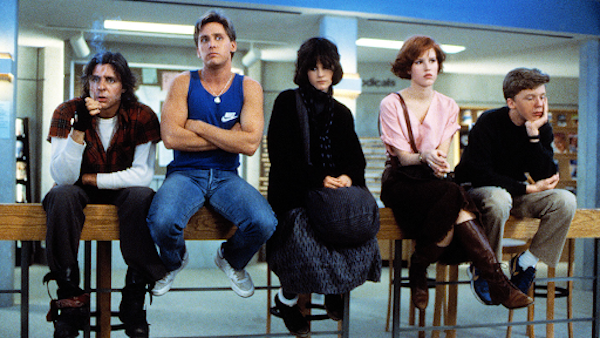" My God, are we gonna be like our parents?"
19. À la dérive
Un très beau film d'amour qui va te donner envie au début de partir faire un tour du monde en bateau avec un bg. Après, tu risques de changer d'avis...
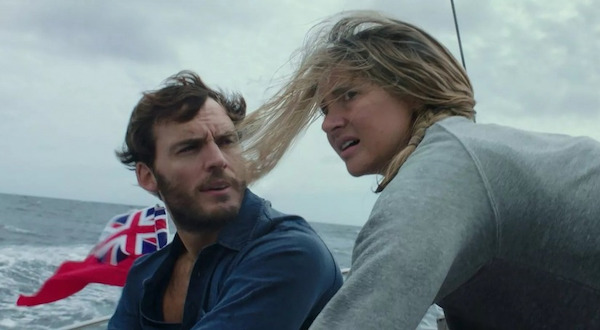"Why do you do it? - It's a feeling that I can't describe. The view and the infinite horizon."
20. L'affaire SK1
Histoire vraie de la traque de Guy Georges, un des plus grands tueurs en série français, qui a durée plus de 7 ans. Le film est hyper palpitant, inquiétant de fou aussi parce que c'était il n'y a pas si longtemps..
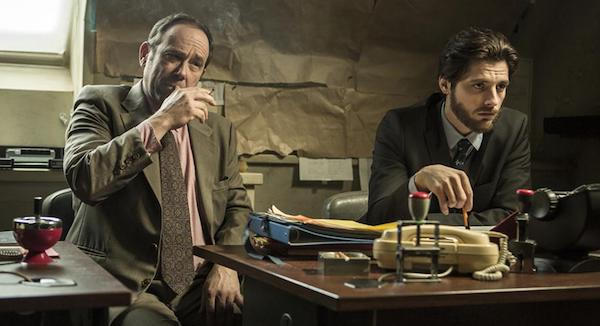"L'homme est le seul prédateur qui s'attaque à sa propre espèce et Guy Georges en est le parfait exemple. Il est et restera un prédateur qui chasse pour survivre à son propre malheur."
21. Five
Petite comédie française sympa sur 5 potes qui veulent se mettre en colloc à Paris. Ils tombent en galère de thune et se lance dans le traffic de drogue, mdrrr mauvaise idée...
"T'es sérieux mec Julia c'est comme notre soeur ?- Je sais mec mais c'était sincère, une gaule sincère quoi en fait."
22. Le Majordome
Inspiré de l'histoire vraie d'un homme qui a travaillé à la maison blanche pendant 34 ans et servi 8 présidents. Le film retrace tous les bouleversements et l'évolution du racisme et de la ségrégation aux États-Unis.
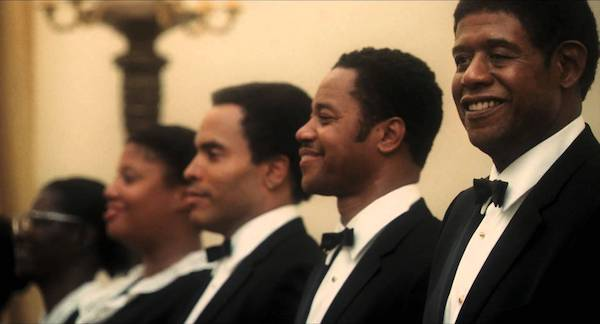"Are you political, Mr. Gaines? - No sir. - Good. We have no tolerance for politics here at the White House."
23. Chef
Film super good vibes et qui donne faim lol. Un chef étoilé après avoir reçu de mauvaises critiques et décide de tout quitter pour créer son foodtruck.
"It's up! It's up! The review's up! 'His dramatic weight gain can only be explained by the fact that he must be eating all the food sent back to the kitchen'."
24. Le Grand Bain
Une bonne comédie française sur des gros darons qui galèrent un peu beaucoup dans leurs vies et se mettent à l'aquagym.
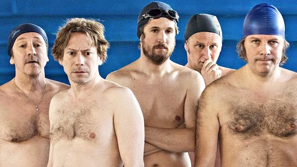"On va chercher la fille qui est en nous ! – Moi, y’a pas de fille en moi. – Bien sûr que si abruti, t’en perdras pas tes couilles pour autant, au contraire, t’en gagneras peut-être un peu."
25. Les petits mouchoirs
Une bande de potes décident de partir en vacances après un grave accident d'un de la bande. Ces vacances vont permettre de révéler beaucoup de secrets...
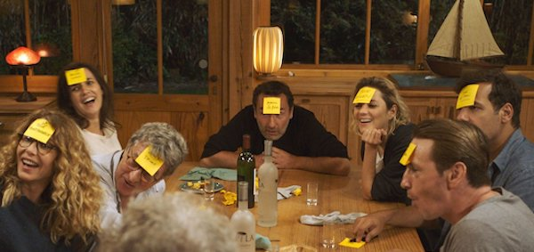"Vous vous dîtes amis, mais c’est quoi être amis ? C’est laisser votre pote tout seul à l’hosto’ pendant quinze jours, parce que vos vacances et votre petit confort, c’est plus important ?!"
26. La Famille Adams
Un bon petit film classique sur une famille complètement déjantée.
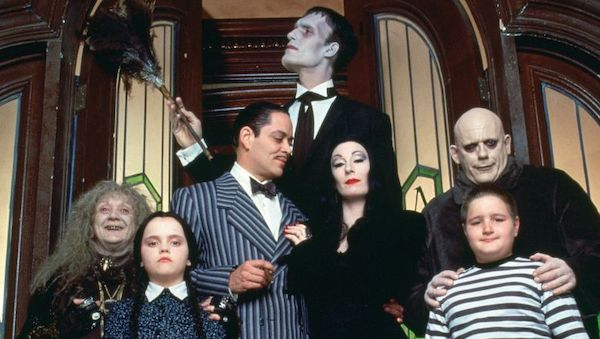"Don't Torture Yourself, Gomez; That's My Job."
27. Le sens de la fête
Une comédie française sur la galère d'organiser un mariage. Il y a de très bons acteurs tu vas voir c'est marrant !
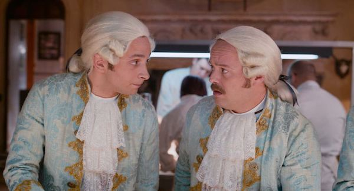"Nan, nan, je veux personne dans le champ. Regarde, y'a une vieille dans le champ là. - La vieille, c'est ma mère."
28. Mystic River
Un classique très sombre de Clint Eastwood, suite à l'assassinat de sa fille, Jimmy renoue contact par hasard avec ses anciens amis. Le passé de l'un d'eux fait peser sur lui beaucoup de soupçons...
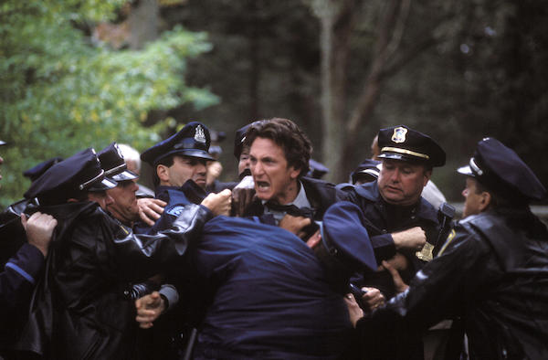"Maybe someday you forget what it’s like to be human and maybe then, it’s OK."
29. Lion
L'histoire vraie d'un petit indien qui perd sa famille et se retrouve adopté en Australie. Quelques années plus tard celui-ci va décider de partir à leur recherche.

"I had another family. A mother. A brother. I can still see their faces."
30. Les trois mousquetaires
Un film d'action sympa que j'adorai quand j'étais petite, en plus c'est drôle. Point bonus y'a Orlando Bloom, par contre dans le film il est pas beau😭.
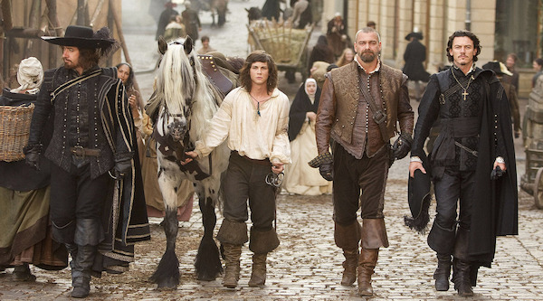J'ai pas trouvé il propose que le livre lol
31. Drive
Un film très silencieux, avec peu de dialogues mais beaucoup de scènes d'actions. C'est l'histoire d'un gars qui conduit des voitures en tant que cascadeur le jour et qui conduit pour les braqueurs de banque la nuit.
"You give me a time and a place, I give you a five minute window. Anything happens in that five minutes and I'm yours. No matter what. Anything happens a minute either side of that and you're on your own. Do you understand?"
32. Mary
Un homme vit avec sa nièce et finit par s'aperçevoir que celle-ci est surdouée. Le film est hyper touchant parce que tout le monde veut essayer de les séparer et ils vont tout faire pour rester soudés.
"He's a good person. He wanted me before I was smart."
33. Lone Ranger
Un western complètement déjanté avec Johnny Depp en indien fou. La musique est super sympa aussi !

"Eight men rode into canyon… I dug seven graves. Horse says, you are spirit walker, a man who has been to the other side and returned, a man who cannot be killed in battle."
34. The New World
Le film est long mais magnifique et très poétique. Je crois que c'est l'histoire de la vraie Pocahontas, il faut être dans un mood pour le voir, mais quand t'y es c'est incroyable.
"Her father had a dozen wives, a hundred children, but she was his favorite. She exceeded the rest not only in feature and proportion but in wit and spirit too. All loved her."
35. Polisse
Bon alors celui-là, psychologiquement il faut être prête. C'est un film inspiré de faits réels sur la brigade de protection des mineurs donc je te fais pas un dessin c'est glauque mais le film reste quand même incontournable parce qu'il a gagné le prix du jury à Cannes et qu'il montre la vraie vie de policiers qui ont vraiment un sale boulot.
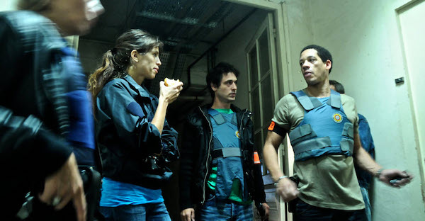"- C'est interdit la polygamie monsieur. - Mais moi je suis pas polygame. - Vous avez combien de femmes ? - Deux. - Donc vous êtes polygame. - Non je suis bigame."
36. Pulp Fiction
Gros classique de Tarantino avec des scènes et des dialogues cultes. À voir juste pour ta culture cinématographique et musicale, y'a des vrais sons.
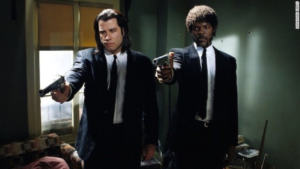"And you know what they call a Quarter Pounder with Cheese in Paris? - They don't call it a Quarter Pounder with Cheese? - Nah, man, they got the metric system. They wouldn't know what the fuck a Quarter Pounder is. - What do they call it? - They call it a "Royale with Cheese."
37. Prisoners
Un drame sombre sur une enquête policière compliquée avec de supers acteurs.
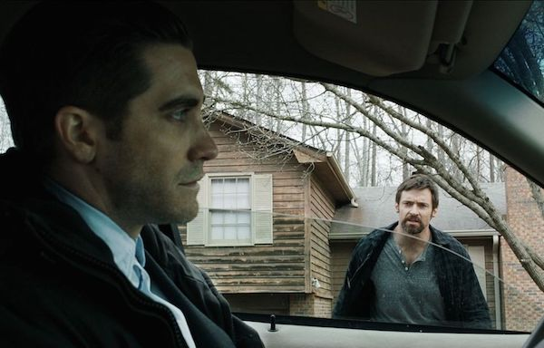"Pray for the best but prepare for the worst."
38. Populaire
Un petit film français sympa pour faire passer le temps. Dans les années 50 ou 60 je sais plus trop, une jeune femme est engagée comme secrétaire par un assureur qui découvre que celle-ci à un talent : elle tape super vite à la machine à ecrire. L'ambition de son patron va l'amener vers de grandes compétitions..
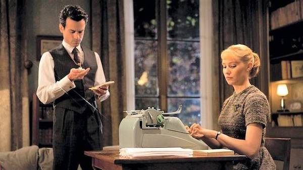"Participer à un concours ? - Pas participer, gagner."
39. Sixième Sens
Génial ce film, en plus Bruce Willis avait encore des cheveux lol. Nan sinon c'est l'histoire d'un petit garçon qui voit des fantômes bien flippants et qui du coup a une vie nulle. MAIS, Bruce Willis, qui est psychologue dans le film, est là pour le sauver !
"They just want help, even the scary ones."
40. Fury
Je crois que c'est le seul film de guerre de la liste mais du coup il est vraiment bien. C'est l'histoire d'un petit groupe de soldat américain qui sont envoyés dans une mission périlleuse dans l'Allemagne Nazi avec leur tank. Mais du coup c'est un peu violent en balle.
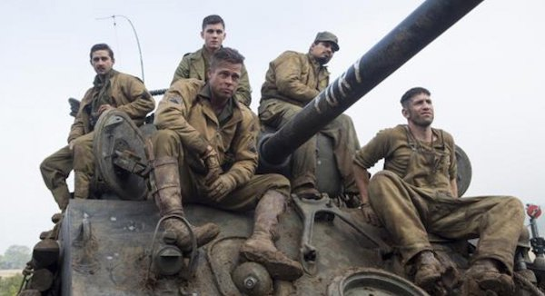" I started this war killing Germans in Africa. Then France. Then Belgium. Now I'm killing Germans in Germany. It will end, soon. But before it does, a lot more people gotta die."